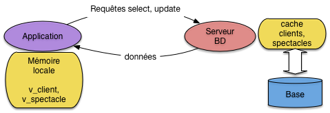
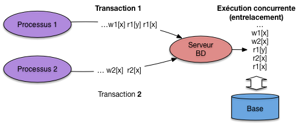
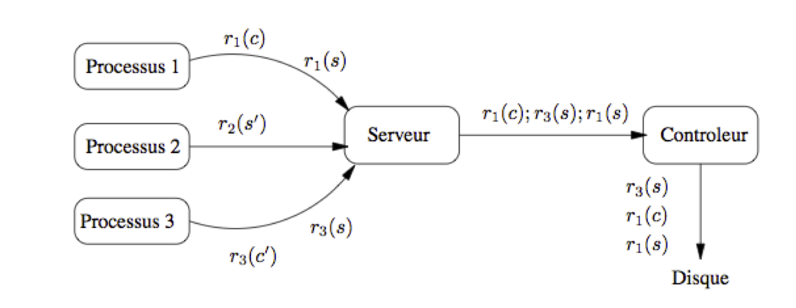
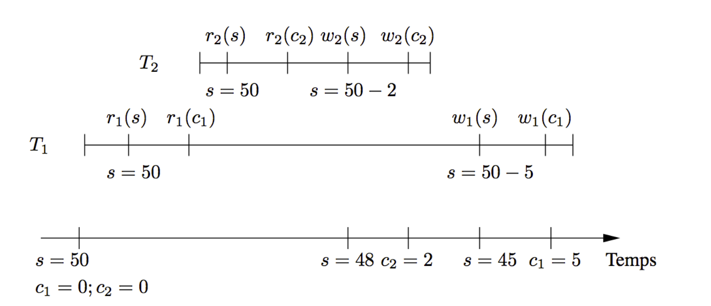
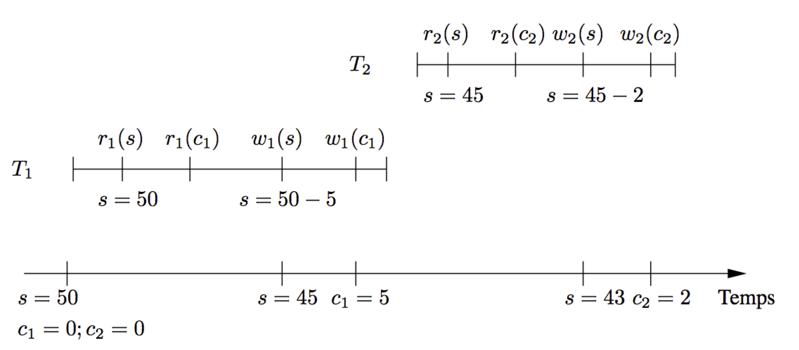
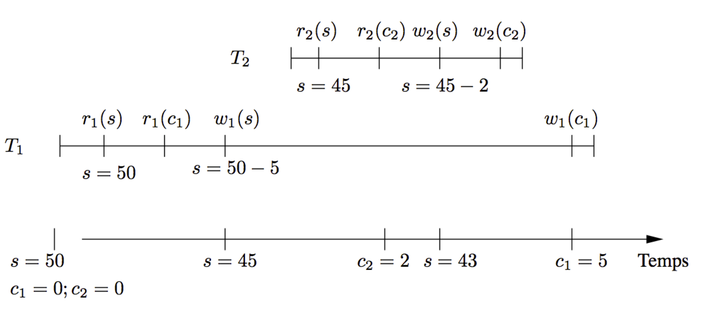
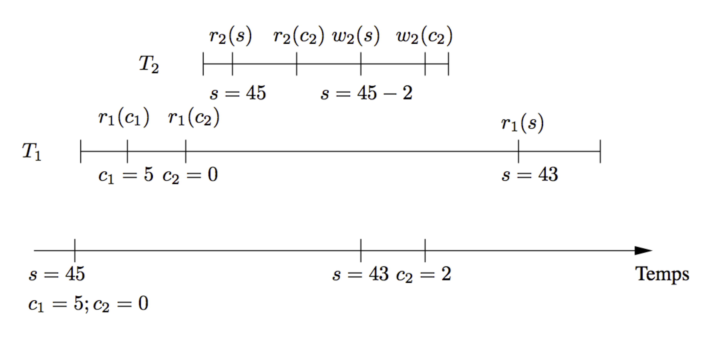

9. Transactions¶
Quand on développe un programme P accédant à une base de données, on effectue en général plus ou moins explicitement deux hypothèses:
P s’exécutera indépendamment de tout autre programme ou utilisateur;
l’exécution de P se déroulera toujours intégralement.
Il est clair que ces deux hypothèses ne se vérifient pas toujours. D’une part les bases de données constituent des ressources accessibles simultanément à plusieurs utilisateurs qui peuvent y rechercher, créer, modifier ou détruire des informations: les accès simultanés à une même ressource sont dits concurrents, et l’absence de contrôle de cette concurrence peut entraîner de graves problèmes de cohérence dus aux interactions des opérations effectuées par les différents utilisateurs. D’autre part on peut envisager beaucoup de raisons pour qu’un programme ne s’exécute pas jusqu’à son terme. Citons par exemple:
l’arrêt du serveur de données;
une erreur de programmation entrainant l’arrêt de l’application;
la violation d’une contrainte amenant le système à rejeter les opérations demandées;
une annulation décidée par l’utilisateur.
Une interruption de l’exécution peut laisser la base dans un état transitoire incohérent, ce qui nécessite une opération de réparation consistant à ramener la base au dernier état cohérent connu avant l’interruption. Les SGBD relationnels assurent, par des mécanismes complexes, un partage concurrent des données et une gestion des interruptions qui permettent d’assurer à l’utilisateur que les deux hypothèses adoptées intuitivement sont satisfaites, à savoir:
son programme se comporte, au moment où il s’exécute, comme s’il était seul à accéder à la base de données;
en cas d’interruption intempestive, les mises à jour effectuées depuis le dernier état cohérent seront annulées par le système.
On désigne respectivement par les termes de contrôle de concurrence et de reprise sur panne l’ensemble des techniques assurant ce comportement. En théorie le programmeur peut s’appuyer sur ces techniques, intégrées au système, et n’a donc pas à se soucier des interactions avec les autres utilisateurs. En pratique les choses ne sont pas si simples, et le contrôle de concurrence a pour contreparties certaines conséquences qu’il est souvent important de prendre en compte dans l’écriture des applications. En voici la liste, chacune étant développée dans le reste de ce chapitre:
Définition des points de sauvegardes. La reprise sur panne garantit le retour au dernier état cohérent de la base précédant l’interruption, mais c’est au programmeur de définir ces points de cohérence (ou points de sauvegarde) dans le code des programmes.
Blocages des autres utilisateurs. Le contrôle de concurrence s’appuie sur le verrouillage de certaines resources (tables blocs, n-uplets), ce qui peut bloquer temporairement d’autres utilisateurs. Dans certains cas des interblocages peuvent même apparaître, amenant le système à rejeter l’exécution d’un des programmes en cause.
Choix d’un niveau d’isolation. Une isolation totale des programmes garantit la cohérence, mais entraîne une dégradation des performances due aux verrouillages et aux contrôles appliqués par le SGBD. Or, dans beaucoup de cas, le verrouillage/contrôle est trop strict et place en attente des programmes dont l’exécution ne met pas en danger la cohérence de la base. Le programmeur peut alors choisir d’obtenir plus de concurrence (autrement dit, plus de fluidité dans les exécutions concurrentes), en demandant au système un niveau d’isolation moins strict, et en prenant éventuellement lui-même en charge le verrouillage des ressources critiques.
Ce chapitre est consacré à la concurrence d’accès, vue par le programmeur d’application. Il ne traite pas, ou très superficiellement, des algorithmes implantés par les SGBD. L’objectif est de prendre conscience des principales techniques nécessaires à la préservation de la cohérence dans un système multi-utilisateurs, et d’évaluer leur impact en pratique sur la réalisation d’applications bases de données. La gestion de la concurrence, du point de vue de l’utilisateur, se ramène en fait à la recherche du bon compromis entre deux solutions extrêmes:
une cohérence maximale impliquant un risque d’interblocage relativement élevé;
ou une fluidité concurrentielle totale au prix de risques importants pour l’intégrité de la base.
Ce compromis dépend de l’application et de son contexte (niveau de risque acceptable vs niveau de performance souhaité) et relève donc du choix du concepteur de l’application. Mais pour que ce choix existe, et puisse être fait de manière éclairée, encore faut-il être conscient des risques et des conséquences d’une concurrence mal gérée. Ces conséquences sont insidieuses, souvent erratiques, et il est bien difficile d’imputer au défaut de concurrence des comportements que l’on a bien du mal à interpréter. Tout ce qui suit vise à vous éviter ce fort désagrément.
Le chapitre débute par une définition de la notion de transaction, et montre ensuite, sur différents exemples, les problèmes qui peuvent survenir. Pour finir nous présentons les niveaux d’isolation définis par la norme SQL.
S1: Transactions¶
Supports complémentaires:
Une transaction est une séquence d’opérations de lecture ou de mise à jour sur une base de données, se terminant par l’une des deux instructions suivantes:
commit, indiquant la validation de toutes les opérations effectuées par la transaction;
rollbackindiquant l’annulation de toutes les opérations effectuées par la transaction.
Une transaction constitue donc, pour le SGBD, une unité d’exécution. Toutes les opérations de la transaction doivent être validées ou annulées solidairement.
Notions de base¶
On utilise toujours le terme de transaction, au sens défini
ci-dessus, de préférence à « programme », « procédure » ou
« fonction », termes à la fois inappropriés et
quelque peu ambigus. « Programme » peut en effet désigner,
selon le contexte, la spécification avec un langage de programmation,
ou l’exécution sous la forme d’un processus client communiquant
avec le (programme serveur du) SGBD. C’est toujours la seconde acception
qui s’applique pour le contrôle de concurrence. De plus,
l’exécution d’un programme (un processus) consiste en une suite d’ordres
SQL adressés au SGBD, cette suite pouvant être découpée
en une ou plusieurs transactions en fonction des ordres
commit ou rollback qui s’y trouvent.
La première transaction débute avec le premier ordre SQL
exécuté;
toutes les autres débutent après le
commit ou le rollback de la transaction précédente.
Note
Il est aussi possible d’indiquer
explicitement le début d’une transaction avec la commande START TRANSACTION.
Dans tout ce chapitre nous allons prendre l’exemple de transactions consistant à réserver des places de spectacle pour un client. On suppose que la base contient les deux tables suivantes:
create table Client (id_client INTEGER NOT NULL,
nom VARCHAR(255) NOT NULL,
nb_places_reservees INTEGER NOT NULL,
solde INTEGER NOT NULL,
primary key (id_client));
create table Spectacle (id_spectacle INTEGER NOT NULL,
nb_places_offertes INTEGER NOT NULL,
nb_places_libres INTEGER NOT NULL,
tarif DECIMAL(10,2) NOT NULL,
primary key (id_spectacle));
Chaque transaction s’effectue pour un client, un spectacle et un nombre de places à réserver. Elle consiste à vérifier qu’il reste suffisamment de places libres. Si c’est le cas elle augmente le nombre de places réservées par le client, et elle diminue le nombre de places libres pour le spectacle. On peut la coder en n’importe quel langage. Voici, pour être concret (et concis), la version PL/SQL.
/* Un programme de reservation */
create or replace procedure Reservation (v_id_client INTEGER,
v_id_spectacle INTEGER,
nb_places INT) AS
-- Déclaration des variables
v_client Client%ROWTYPE;
v_spectacle Spectacle%ROWTYPE;
v_places_libres INTEGER;
v_places_reservees INTEGER;
BEGIN
-- On recherche le spectacle
SELECT * INTO v_spectacle
FROM Spectacle WHERE id_spectacle=v_id_spectacle;
-- S'il reste assez de places: on effectue la reservation
IF (v_spectacle.nb_places_libres >= nb_places)
THEN
-- On recherche le client
SELECT * INTO v_client FROM Client WHERE id_client=v_id_client;
-- Calcul du transfert
v_places_libres := v_spectacle.nb_places_libres - nb_places;
v_places_reservees := v_client.nb_places_reservees + nb_places;
-- On diminue le nombre de places libres
UPDATE Spectacle SET nb_places_libres = v_places_libres
WHERE id_spectacle=v_id_spectacle;
-- On augmente le nombre de places reervees par le client
UPDATE Client SET nb_places_reservees=v_places_reservees
WHERE id_client = v_id_client;
-- Validation
commit;
ELSE
rollback;
END IF;
END;
/
Chaque exécution de ce code correspondra à une transaction. La première remarque, essentielle pour l’étude et la compréhension du contrôle de concurrence, est que l’exécution d’une procédure de ce type correspond à des échanges entre deux processus distincts: le processus client qui exécute la procédure, et le processus serveur du SGBD qui se charge de satisfaire les requêtes SQL. On prend toujours l’hypothèse que les zones mémoires des deux processus sont distinctes et étanches. Autrement dit le processus client ne peut accéder aux données que par l’intermédiaire du serveur, et le processus serveur, de son côté, est totalement ignorant de l’utilisation des données transmises au processus client (Fig. 9.1).
{kind=link}

Fig. 9.1 Le processus client et le processus serveur pendant une transaction¶
Il s’ensuit
que non seulement le langage utilisé pour coder les transactions est totalement
indifférent, mais que les variables, les interactions
avec un utilisateur ou les structures de programmation (tests et boucles)
du processus client sont transparentes pour le programme serveur. Ce dernier
ne connaît que la séquence des instructions qui lui sont explicitement destinées,
autrement dit les ordres de lecture ou d’écriture, les
commit et les rollback.
D’autre part, les remarques suivantes, assez triviales, méritent cependant d’être mentionnées:
deux exécutions de la procédure ci-dessus peuvent entraîner deux transactions différentes, dans le cas par exemple où le test effectué sur le nombre de places libres est positif pour l’une est négatif pour l’autre;
un processus peut exécuter répétitivement une procédure –par exemple pour effectuer plusieurs réservations– ce qui déclenche des transactions en série (retenez le terme, il est important);
deux processus distincts peuvent exécuter indépendamment la même procédure, avec des paramètres qui peuvent être identiques ou non.
On fait toujours l’hypothèse que deux processus ne communiquent
jamais entre eux. En résumé, une transaction est une séquence d’instructions de lecture ou de mise
à jour transmise par un processus client au serveur du SGBD, se concluant par commit ou
rollback.
Exécutions concurrentes¶
Pour chaque processus il ne peut y avoir qu’une seule transaction en cours à un moment donné, mais plusieurs processus peuvent effectuer simultanément des transactions. C’est même le cas général pour une base de données à laquelle accèdent simultanément plusieurs applications. Si elles manipulent les mêmes données, on peut aboutir à un entrelacement des lectures et écritures par le serveur, potentiellement générateur d’anomalies (Fig. 9.2).
{kind=link}

Fig. 9.2 Exécution concurrentes engendrant un entrelacement¶
Chaque processus est identifié par un numéro unique qui est soumis au SGBD avec chaque ordre SQL effectué par ce processus (c’est l’identifiant de session, obtenu au moment de la connexion). Voici donc comment on représentera une transaction du processus numéro 1 exécutant la procédure de réservation.
Les symboles c et s désignent les nuplets –ici un spectacle s et un
client c– lus ou mis à jour par les opérations, tandis
que le symbole C désigne un commit (on utilisera
bien entendu R pour le rollback). Dans tout ce chapitre on
supposera, sauf exception explicitement mentionnée, que l’unité d’accès à la
base est le nuplet (une ligne dans une table), et que tout verrouillage s’applique à ce niveau.
Voici une autre transaction, effectuée par le processus numéro 2, pour la même procédure.
On a donc lu le spectacle s”, et constaté qu’il n’y a plus assez de places libres. Enfin le dernier exemple est celui d’une réservation effectuée par un troisième processus.
Le client c” réserve donc ici des places pour le spectacle s.
Les trois processus peuvent s’exécuter au même moment, ce qui revient à soumettre à peu près simultanément les opérations au SGBD. Ce dernier pourrait choisir d’effectuer les transactions en série, en commençant par exemple par le processus 1, puis en passant au processus 2, enfin au processus 3. Cette stratégie a l’avantage de garantir de manière triviale la vérification de l’hypothèse d’isolation des exécutions, mais elle est potentiellement très pénalisante puisqu’une longue transaction pourrait metre en attente pour un temps indéterminé de nombreuses petites transactions.
C’est d’autant plus injustifié que, le plus souvent, l’entrelacement des opérations est sans danger, et qu’il est possible de contrôler les cas où il pourrait poser des problèmes. Tous les SGBD autorisent donc des exécutions concurrentes dans lequelles les opérations s’effectuent alternativement pour des processus différents. Voici un exemple d’exécution concurrente pour les trois transactions précédentes, dans lequel on a abrégé read et write respectivement par r et w.
{kind=link}

Fig. 9.3 Processus soumettant des transactions¶
Dans un premier temps on peut supposer que l’ordre des opérations dans une exécution concurrente est l’ordre de transmission de ces opérations au système. Comme nous allons le voir sur plusieurs exemples, cette absence de contrôle mène à de nombreuses anomalies qu’il faut absolument éviter. Le SGBD (ou, plus précisément, le module chargé du contrôle de concurrence) effectue donc un ré-ordonnancement si cela s’impose. Cependant, l’entrelacement des opérations ou leur ré-ordonnancement ne signifie en aucun cas que l’ordre des opérations internes à une transaction \(T_i\) peut être modifié. En « effaçant » d’une exécution concurrente toutes les opérations pour les transactions \(T_j , i \not= j\) on doit retrouver exactement les opérations de \(T_i\), dans l’ordre où elles ont été soumises au système. Ce dernier ne change jamais cet ordre car cela reviendrait à transformer le programme en cours d’exécution.
La Fig. 9.3 montre une première ébauche des composants intervenant dans le contrôle de concurrence. On y retrouve les trois processus précédents, chacun soumettant des instructions au serveur. Le processus 1 soumet par exemple \(r_1(s)\), puis \(r_1(c)\). Le serveur transmet les instructions, dans l’ordre d’arrivée (ici, d’abord \(r_1(s)\), puis \(r_3(s)\), puis \(r_1(c)\)), à un module spécialisé, le contrôleur qui, lui, peut réordonnancer l’exécution s’il estime que la cohérence en dépend. Sur l’exemple de la Fig. 9.3, le contrôleur exécute, dans l’ordre \(r_1(s)\), \(r_1(c)\) puis \(r_3(s)\).
Propriétés ACID des transactions¶
Les SGBD garantissent que l’exécution des transactions satisfait un ensemble de bonnes propriétés que l’on résume commodément par l’acronyme ACID (Atomicité, Cohérence, Isolation, Durabilité).
Isolation¶
L’isolation est la propriété qui garantit que l’exécution d’une transaction semble totalement indépendante des autres transactions. Le terme « semble » est bien entendu relatif au fait que, comme nous l’avons vu ci-dessus, une transaction s’exécute en fait en concurrence avec d’autres. Du point de vue de l’utilisateur, tout se passe donc comme si son programme, pendant la période de temps où il accède au SGBD, était seul à disposer des ressources du serveur de données.
Le niveau d’isolation totale, telle que défini ci-dessus, est dit sérialisable puisqu’il est équivalent du point de vue du résultat obtenu, à une exécution en série des transactions. C’est une propriété forte, dont l’inconvénient est d’impliquer un contrôle strict du SGBD qui risque de pénaliser fortement les autres utilisateurs. Les systèmes proposent en fait plusieurs niveaux d’isolation dont chacun représente un compromis entre la sérialisabilité, totalement saine mais pénalisante, et une isolation partielle entraînant moins de blocages mais plus de risques d’interactions perturbatrices.
Le choix du bon niveau d’isolation, pour une transaction donnée, est de la responsabilité du programmeur et implique une bonne compréhension des dangers courus et des options proposées par les SGBD. Le présent chapitre est essentiellement consacré à donner les informations nécessaires à ce choix.
Garantie de la commande commit (durabilité)¶
L’exécution d’un commit rend permanentes toutes
les mises à jour de la base effectuées durant la transaction.
Le système garantit que toute interruption du système
survenant après le commit ne remettra pas
en cause ces mises à jour.
Cela signifie également que tout commit d’une transaction
T rend impossible l’annulation de cette même transaction avec
rollback. Les anciennes données sont perdues,
et il n’est pas possible de revenir en arrière.
Le commit a également pour effet de lever tous
les verrous mis en place durant la transaction pour prévenir
les interactions avec d’autres transactions. Un des effets du
commit est donc de « libérer » les
éventuelles ressources bloquées par la transaction validée.
Une bonne pratique, quand la nature de la transaction le permet,
est donc d’effectuer les opérations potentiellement
bloquantes le plus tard possible, juste avant le commit
ce qui diminue d’autant la période pendant laquelle les
données en concurrence sont verrouillées.
Garantie de la commande rollback (atomicité)¶
Le rollback annule toutes les modifications de la base
effectuées pendant la transaction. Il relâche
également tous les verrous posés sur les données
pendant la transaction par le système, et libère donc
les éventuels autres processus en attente de ces données.
Un rollback peut être déclenché explicitement par
l’utilisateur, ou effectué par le système au moment d’une reprise
sur panne ou de tout autre problème empêchant la poursuite
normale de la transaction. Dans tout les cas l’état des données
modifiées par la transaction revient,
après le rollback, à ce qu’il était au
début de la transaction. Cette commande garantit
donc l’atomicité des transactions, puisqu’une transaction
est soit effectuée totalement (donc jusqu’au commit
qui la conclut) soit annulée totalement (par un rollback
du système ou de l’utilisateur).
L’annulation par rollback rend évidemment impossible
toute validation de la transaction: les mises à jour sont
perdues et doivent être resoumises.
Cohérence des transactions¶
Le maintien de la cohérence peut relever aussi bien du système que de l’utilisateur selon l’interprétation du concept de « cohérence ».
Pour le système, la cohérence d’une base est définie par les contraintes associées au schéma. Ces contraintes sont notamment:
les contraintes de clé primaire (clause
primary key);l’intégrité référentielle (clause
foreign key);les contraintes
check;les contraintes implantées par triggers.
Toute violation de ces contraintes entraîne non seulement
le rejet de la commande SQL fautive, mais également un rollback
automatique puisqu’il est hors de question de laisser un programme
s’exécuter seulement partiellement.
Mais la cohérence désigne également un état de la base considéré comme satisfaisant pour l’application, sans que cet état puisse être toujours spécifié par des contraintes SQL. Dans le cas par exemple de notre programme de réservation, la base est cohérente quand:
le nombre de places prises pour un spectacle est le même que la somme des places réservées pour ce spectacle par les clients;
le solde de chaque client est supérieur à 0.
Il n’est pas facile d’exprimer cette contrainte avec les commandes DDL de SQL, mais on peut s’assurer qu’elle est respectée en écrivant soigneusement les procédures de mises à jour pour qu’elle tirent parti des propriétés ACID du système transactionnel.
Reprenons notre procédure de réservation, en supposant que la base est initialement dans un état cohérent (au sens donné ci-dessus de l’équilibre entre le nombre de places prises et le nombres de places réservées). Les propriétés d’atomicité (A) et de durabilité (D) garantissent que:
la transaction s’effectue totalement, valide les deux opérations de mise à jour qui garantissent l’équilibre, et laisse donc après le
commitla base dans un état cohérent;la transaction est interrompue pour une raison quelconque, et la base revient alors à l’état initial, cohérent.
De plus toutes les contraintes définies dans le schéma sont respectées si la transaction arrive à terme (sinon le système l’annule).
Tout se passe bien parce que le programmeur a placé le commit
au bon endroit. Imaginons maintenant qu’un commit
soit introduit après le premier UPDATE. Si le second
UPDATE soulève une erreur, le système effectue
un rollback jusqu’au commit qui précède,
et laisse donc la base dans un état incohérent –déséquilibre
entre les places prises et les places réservées– du point de vue
de l’application.
Dans ce cas l’erreur vient du programmeur qui a défini deux transactions
au lieu d’une, et entraîné une validation à un moment où
la base est dans un état intermédiaire. La leçon est simple:
tous les commit et rollback doivent être
placés de manière à s’exécuter au moment
où la base est dans un état cohérent.
Il faut toujours se souvenir qu’un commit ou
un rollback marque la fin d’une transaction, et définit
donc l’ensemble des opérations qui doivent s’exécuter solidairement
(ou « atomiquement »).
Un défaut de cohérence peut enfin résulter d’un mauvais entrelacement des opérations concurrentes de deux transactions, dû à un niveau d’isolation insuffisant. Cet aspect sera illustré dans la prochaine section consacrée aux conséquences d’une absence de contrôle.
Quiz¶


S2: Pratique des transactions¶
Supports complémentaires:
Pour cette session, nous vous proposons une mise en pratique consistant à constater directement les notions de base des transactions en interagissant avec un système relationnel. Vous avez deux possibilités: effectuer chez vous les commandes avec un système que vous avez installé localement (MySQL, Postgres, Oracle ou autre), ou utiliser l’application en ligne que nous mettons à disposition à l’adresse indiquée ci-dessus.
Quel que soit votre choix, n’hésitez pas à expérimenter et à chercher à comprendre le fonctionnement que vous constatez.
L’application en ligne « Transactions »¶
Ce TP est basé sur l’utilisation d’une base de données. Dans un premier temps, nous expliquons le contenu de la fenêtre d’interaction avec cette base.
Important
Vous pouvez à tout moment réinitialiser l’ensemble de la base en appuyant sur le bouton « Réinitialiser » en haut à droite de la fenêtre. Avant d’exécuter cette réinitialisation, vous devez sélectionner le niveau d’isolation parmi les 4 possibles : SERIALIZABLE, REPEATABLE READ, READ COMMITTED et READ UNCOMMITTED. Pour l’instant, conservez le niveau d’isolation par défaut, nous y reviendrons ultérieurement.
L’application est divisée en deux parties semblables, l’une à gauche, l’autre à droite, représentant deux sessions distinctes connectées à une même base. Ce dispositif permet de visualiser les interactions entre deux processus clients accédant de manière concurrente à des mêmes données. Nous détaillons maintenant les informations présentes dans chaque transaction.
Structure et contenu de la base¶
Le contenu de la base représente des clients achetant des places sur des vols. À peu de choses près, ce n’est qu’une variante de notre procédure de réservation. Son schéma est constitué de deux tables :
Client(Id, Nom, Solde, Places)
Vol (Id, Intitulé, Capacité, Réservations)
La table Client indique pour chaque client son nom, le solde de son compte et le nombre de places qu’il a réservées.
Dans cette base de données, il y a deux clients : C1 et C2. La table Vol indique pour un vol donné la destination,
la capacité et le nombre de réservations effectuées. Dans cette base, il n’y a qu’un seul vol V1. Il s’agit bien
entendu d’un schéma très simplifié, destiné à étudier les mécanismes transactionnels.
Important
Sur cette base on définit la cohérence ainsi: la somme des places réservées par les clients doit être égale à la somme des places réservées pour les vols.
Vous noterez qu’à l’initialisation de la base, elle est dans un état cohérent. Chaque transaction, prise individuellement, préserve la cohérence de la base. Nous verrons que les mécanismes d’isolation ne garantissent pas que cela reste vrai en cas d’exécution concurrente.
L’affichage des tables montre, à tout moment, l’état de la base visible par une session. Nous affichons deux tables car chaque session peut avoir une vision différente, comme nous allons le voir.
Variables¶
En dessous des tables sont indiquées des variables utilisées par les transactions, soit comme paramètres,
soit pour y stocker le résultat des requêtes. Par convention, le nom d’une variable est préfixé par « : ».
Au départ, toutes les valeurs sont inconnues, sauf :billet qui représente le nombre de billets à réserver.
Actions¶
Quatre actions, qui correspondent à des requêtes utilisant les valeurs courantes des variables sont disponibles. Le code de chaque requête s’affiche lorsque vous passez la souris sur le bouton. Certaines requêtes peut être utilisées depuis la session S1 ou S2 selon qu’on les exécute à gauche ou à droite.
Requête
select V1 intoselect capacité, réservations, tarif into :capacité, :réservations, :tarif from Vol where id=V1Cette requête permet de stocker la capacité du vol et le nombre actuel de réservations dans les variables de la transaction.
Requête
Select C1 into:select solde into :solde from Client where id=C1Cette requête permet de stocker le solde du client C1. Cette requête n’est accessible que depuis la transaction T1.
Requête
select C2 intoselect solde into :solde from Client where id=C2Cette requête permet de stocker le solde du client C2. Cette requête n’est accessible que depuis la transaction T2.
Requête
Update V1:update Vol set réservations=:réservations+billets where id=V1 CCette requête permet de mettre à jour le nombre de réservations dans la table Vol, sur la base de la valeur des variables
:réservationset:billetsCette requête est disponible depuis T1 et T2.Requête
Update C1:update Client set solde=:solde-:billets*:tarif where id=C1Cette requête permet de mettre à jour le solde du client C1 qui vient d’acheter les billets. Cette requête n’est disponible que depuis T1.
Requête
Update C2update Client set solde=:solde-:billets*:tarif where id=C2Cette requête permet de mettre à jour le solde du client C2 qui vient d’acheter les billets. Cette requête n’est disponible que depuis T2.
Commit: permet d’accepter toutes les mises à jour de la transaction.
Rollback: permet d’annuler toutes les mises à jour depuis le dernier commit.
Une transaction se compose d’une suite d’actions, se terminant soit par un commit, soit par un
rollback. Remarquez bien que si l’on exécute, dans l’ordre suggéré, les lectures puis les mises à jour,
on obtient une transaction correcte qui préserve la cohérence de la base. Rien ne vous empêche d’effectuer
les opérations dans un ordre différent si vous souhaitez effectuer un test en dehors de ceux donnés ci-dessous.
Historique¶
La liste des commandes effectuées, ainsi que les réponses du SGBD s’affichent au fur et à mesure de leur exécution. Celles-ci disparaissent lorsqu’on réinitialise l’application.
Nous vous invitons maintenant à regarder la vidéo et en reproduire vous-même le déroulement.
Quelques expériences avec l’interface en ligne¶
Voici quelques manipulations à faire avec l’interface en ligne. Vous pouvez suivre au préalable la vidéo indiquée en début de session, mais pratiquer vous-mêmes sera plus concret pour assimiler les principales leçons.
Leçon 1: isolation des transactions¶
Effectuez une transaction de réservation à gauche (deux sélections, deux mises à jour), mais ne validez pas encore. Vous devriez constater que:
les mises à jour sont visibles par la transaction qui les a effectuées,
elles sont en revanche invisibles par toute autre transaction.
C’est la notion d’isolation des transactions. L’isolation est complète quand le résultat d’une transaction ne dépend pas de la présence ou non d’autres transactions. Nous verrons que l’isolation complète a des conséquences potentiellement pénalisantes et que les systèmes ne l’adoptent pas par défaut.
Leçon 2: commit et rollback¶
Effectuez un rollback de la transaction en cours (à gauche). Vous devriez constater:
que la base revient à son état initial;
que
commitourollbackn’ont plus aucun effet: nous sommes au début d’une nouvelle transaction;pour la transaction de droite, rien n’a changé, tout se passe comme si celle de gauche n’avait pas existé.
Maintenant, lisez le vol à droite et constatez qu’il a zéro réservations.
Recommencez la transaction à gauche, et effectuez un commit. Vous constatez que:
il n’est plus possible d’annuler par
rollback.les mises à jour sont toujours invisibles par l’autre transaction;
Le fait de ne pas pouvoir annuler correspond à la notion de durabilité: le commit
valide les données de manière définitive. Elles
intègrent ce que nous appellerons l’état de la base, autrement dit l’ensemble des données
validées, visibles par toutes les transactions.
Le fait que la transaction de droite ne puisse toujours pas voir les mises à jour est
plus surprenant. C’est encore un effet de l’isolation: la transaction de droite a débuté avant
celle de gauche, et elle continue durant toute son existence à voir la base
telle qu’elle existait au moment où elle a débuté. C’est ce qu’indique le
mode repeatable read: les mêmes lectures renvoient toujours le même résultat.
Commencez une autre transaction à gauche: il suffit de faire commit ou rollback.
Cette fois le nouvel état de la base apparaît.
Leçon 3: les écritures concurrentes posent des verrous¶
Réinitialisez, toujours en mode repeatable read. Maintenant déroulez deux transactions en parallèle
selon l’alternance suivante:
on effectue les deux sélections à gauche, puis une mise à jour du vol;
on effectue les mêmes opérations à droite;
On constate que la transaction de droit est bloquée sur la tentative d’écriture. Il est impossible
d’effectuer deux écritures concurrentes du même nuplet. Il deviendrait en effet alors impossible de gérer
correctement les possibilités de commit et de rollback. Un verrou est donc posé par le système
sur un nuplet modifié par une transaction, et ce verrou empêche toute modification par une autre transaction.
Les verrous entraînent une mise en attente. Ils sont conservés jusqu’à la fin de la transaction
qui les a posés (commit ou rollback). Effectuez un rollback à gauche, et constatez que
la transaction de droite est libérée.
La leçon, c’est que les mises à jour peuvent potentiellement bloquer les autres transactions. Il faut de préférence les effectuer le plus tard possible dans une transaction pour limiter le temps de rétention.
Leçon 4: isolation incomplète = incohérence possible¶
Réinitialisez, toujours en mode repeatable read. Maintenant déroulez deux transactions en parallèle
selon l’alternance suivante:
on effectue les deux sélections à gauche;
on effectue les deux sélections à droite;
on effectue les deux mises à jour à droite, et on valide;
on effectue les deux mises à jour à gauche, et on valide;
On a effectué deux transactions indépendantes: l’une qui réserve 2 billets, l’autre 5. À l’arrivée, vous constaterez que les clients ont bien réservé 2+5=7 billets, mais que seulement 2 billets ont été réservés pour le vol.
La base est maintenant incohérente, alors que chaque transaction, individuellement, est correcte. On constate un défaut de concurrence, dû à un niveau d’isolation incomplet.
La leçon, c’est qu’un niveau d’isolation non maximal (c’est le cas ici) mène potentiellement (pas toujours, loin de là) à une incohérence. De plus cette incohérence est à peu près inexplicable, car elle ne survient que dans une situation très particulière.
Leçon 5: isolation complète = blocages possibles¶
Si on veut assurer la cohérence, il faut donc choisir le mode d’isolation
maximal, c’est-à-dire serializable. Réinitialisez en choisissant ce mode, et
refaites la même exécution concurrente que précédemment.
Cette fois, on constate que le système se bloque et que l’une des transactions est rejetée. C’est la dernière leçon: en cas d’imbrication forte des opérations (ce qui encore une fois ne peut survenir que très rarement), on rencontre un risque d’interblocage.
En mode serializable le verrouillage est plus strict que dans le mode par défaut:
la lecture d’un nuplet par une transaction bloque les tentatives d’écriture par une autre transaction.
Les risques d’être mis en attente sont donc bien plus élevés.
C’est la raison pour laquelle les systèmes ne choisissent
pas ce mode par défaut.
Vous pouvez continuer à jouer avec la console, en essyant d’interpréter les résultats en fonction des remarques qui précèdent. Nous revenons en détail sur le fonctionnement d’un système transactionnel concurrent dans les prochaines sessions.
Mise en pratique directe avec un SGBD¶
Vous pouvez également pratiquer les transactions avec MySQL, Postgres ou Oracle. Un fichier de commandes vous est fourni ci-dessus. Voici deux sessions effectuées en concurrence sous ORACLE. Ces sessions s’effectuent avec l’utilitaire SQLPLUS qui permet d’entrer directement des requêtes sur la base comprenant les tables Client et Spectacle décrites en début de chapitre. Les opérations effectuées consistent à réserver, pour le même spectacle, 5 places pour la session 1, et 7 places pour la session 2.
Voici les premières requêtes effectuées par la session 1.
Session1>SELECT * FROM Client;
ID_CLIENT NB_PLACES_RESERVEES SOLDE
---------- ------------------- ----------
1 3 2000
Session1>SELECT * FROM Spectacle;
ID_SPECTACLE NB_PLACES_OFFERTES NB_PLACES_LIBRES TARIF
------------ ------------------ ---------------- ----------
1 250 200 10
On a donc un client et un spectacle. La session 1 augmente maintenant le nombre de places réservées.
Session1>UPDATE Client SET nb_places_reservees = nb_places_reservees + 5
WHERE id_client=1;
1 row updated.
Session1>SELECT * FROM Client;
ID_CLIENT NB_PLACES_RESERVEES SOLDE
---------- ------------------- ----------
1 8 2000
Session1>SELECT * FROM Spectacle;
ID_SPECTACLE NB_PLACES_OFFERTES NB_PLACES_LIBRES TARIF
------------ ------------------ ---------------- ----------
1 250 200 10
Après l’ordre UPDATE, si on regarde le contenu des
tables Client et Spectacle, on voit bien
l’effet des mises à jour. Notez que la base est ici dans un état instable
puisqu’on n’a pas encore diminué le nombre de places libres. Voyons
maintenant les requêtes de lecture pour la session 2.
Session2>SELECT * FROM Client;
ID_CLIENT NB_PLACES_RESERVEES SOLDE
---------- ------------------- ----------
1 3 2000
Session2>SELECT * FROM Spectacle;
ID_SPECTACLE NB_PLACES_OFFERTES NB_PLACES_LIBRES TARIF
------------ ------------------ ---------------- ----------
1 250 200 10
Pour la session 2, la base est dans l’état initial. L’isolation implique que les mises à jour effectuées par la session 1 sont invisibles puisqu’elles ne sont pas encore validées. Maintenant la session 2 tente d’effectuer la mise à jour du client.
Session2>UPDATE Client SET nb_places_reservees = nb_places_reservees + 7
WHERE id_client=1;
La transaction est mise en attente car, appliquant des techniques de verrouillage qui seront décrites plus loin, ORACLE a réservé le nuplet de la table Client pour la session 1. Seule la session 1 peut maintenant progresser. Voici la fin de la transaction pour cette session.
Session1>UPDATE Spectacle SET nb_places_libres = nb_places_libres - 5
WHERE id_spectacle=1;
1 row updated.
Session1>commit;
Après le commit, la session 2 est libérée,
Session2>UPDATE Client SET nb_places_reservees = nb_places_reservees + 7
WHERE id_client=1;
1 row updated.
Session2>
Session2>SELECT * FROM Client;
ID_CLIENT NB_PLACES_RESERVEES SOLDE
---------- ------------------- ----------
1 15 2000
Session2>SELECT * FROM Spectacle;
ID_SPECTACLE NB_PLACES_OFFERTES NB_PLACES_LIBRES TARIF
------------ ------------------ ---------------- ----------
1 250 195 10
Une sélection montre que les mises à jour de la session 1 sont maintenant
visibles, puisque le commit les a validé définitivement. De plus on
voit également la mise à jour de la session 2. Notez
que pour l’instant la base est dans un état incohérent
puisque 12 places sont réservées par le client, alors
que le nombre de places libres a diminué de 5. La seconde session
doit décider, soit d’effectuer la mise à jour de Spectacle,
soit d’effectuer un rollback. En revanche
il et absolument exclu de demander un commit
à ce stade, même si on envisage de mettre à jour
Spectacle ultérieurement. Si cette dernière
mise à jour échouait, ORACLE ramènerait la base à l’état
– incohérent –
du dernier commit,
Voici ce qui se passe
si on effectue le rollback.
Session2>rollback;
rollback complete.
Session2>SELECT * FROM Client;
ID_CLIENT NB_PLACES_RESERVEES SOLDE
---------- ------------------- ----------
1 8 2000
Session2>SELECT * FROM Spectacle;
ID_SPECTACLE NB_PLACES_OFFERTES NB_PLACES_LIBRES TARIF
------------ ------------------ ---------------- ----------
1 250 195 10
Les mises à jour de la session 2 sont annulées: la base se retrouve dans l’état connu à l’issue de la session 1.
Ce court exemple montre les principales conséquences « visibles » du contrôle de concurrence effectué par un SGBD:
chaque processus/session dispose d’une vision des données en phase avec les opérations qu’il vient d’effectuer;
les données modifiées mais non validées par un processus ne sont pas visibles pour les autres;
les accès concurrents à une même ressource peuvent amener le système à mettre en attente certains processus.
D’autre part le comportement du contrôleur de concurrence
peut varier en fonction du niveau d’isolation choisi qui
est, dans l’exemple ci-dessus, celui adopté
par défaut dans ORACLE (read committed).
Le choix (ou l’acceptation par défaut) d’un niveau
d’isolation inapproprié peut entraîner diverses anomalies
que nous allons maintenant étudier.
Quiz¶
S3: effets indésirables des transactions concurrentes¶
Supports complémentaires:
Pour illustrer les problèmes potentiels en cas d’absence de contrôle de concurrence, ou de techniques insuffisantes, on va considérer un modèle d’exécution très simplifié, dans lequel il n’existe qu’une seule version de chaque nuplet (stocké par exemple dans un fichier séquentiel). Chaque instruction est effectuée par le système, dès qu’elle est reçue, de la manière suivante:
quand il s’agit d’une instruction de lecture, on lit le nuplet dans le fichier et on le transmet au processus;
quand il s’agit d’une instruction de mise à jour, on écrit directement le nuplet dans le fichier en écrasant la version précédente.
Les problèmes consécutifs à ce mécanisme simpliste
peuvent être classés en deux catégories: défauts
d’isolation menant à des incohérences –défauts de sérialisabilité–,
et difficultés dus à une mauvaise prise en compte
des commit et rollback,
ou défauts de recouvrabilité. Les exemples
qui suivent ne couvrent pas l’exhaustivité des situations
d’anomalies, mais illustrent les principaux types
de problèmes.
Défauts de sérialisabilité¶
Considérons pour commencer que
le système n’assure aucune isolation, aucun verrouillage,
et ne connaît ni le commit ni le rollback.
Même en supposant que toutes les exécutions concurrentes
s’exécutent intégralement sans jamais rencontrer de panne,
on peut trouver des situations où l’entrelacement
des instructions conduit à des résultats différents de
ceux obtenus par une exécution en série. De telles
exécutions sont dites non sérialisables et
aboutissent à des incohérences dans la base de données.
Les mises à jour perdues¶
Le problème de mise à jour perdue survient quand deux transactions lisent chacune une même donnée en vue de la modifier par la suite. Prenons à nouveau deux exécutions concurrentes du programme Réservation, désignées par \(T_1\) et \(T_2\). Chaque exécution consiste à réserver des places pour le même spectacle, mais pour deux clients distincts \(c_1\) et \(c_2\). L’ordre des opérations reçues par le serveur est le suivant:
Donc on effectue d’abord les lectures pour \(T_1\), puis les lectures pour \(T_2\) enfin les écritures pour \(T_2\) et \(T_1\) dans cet ordre. Imaginons maintenant que l’on se trouve dans la situation suivante:
il reste 50 places libres pour le spectacle s, \(c_1\) et \(c_2\) n’ont pour l’instant réservé aucune place;
\(T_1\) veut réserver 5 places pour s;
\(T_2\) veut réserver 2 places pour s.
Voici le résultat du déroulement imbriqué des deux exécutions T_1(s, 5, c_1) et T_2(s, 2, c_2), en supposant que la séquence des opérations est celle donnée ci-dessus. On se concentre pour l’instant sur les évolutions du nombre de places vides.
\(T_1\) lit s et \(c_1\) et constate qu’il reste 50 places libres;
\(T_2\) lit s et \(c_2\) et constate qu’il reste 50 places libres;
\(T_2\) écrit s avec nb places = 50-2=48.
\(T_2\) écrit le nouveau compte de \(c_2\).
\(T_1\) écrit s avec nb places = 50-5=45.
\(T_1\) écrit le nouveau compte de \(c_1\).
À la fin de l’exécution, on constate un problème: il reste 45 places vides sur les 50 initiales alors que 7 places ont effectivement été réservées et payées. Le problème est clairement issu d’une mauvaise imbrication des opérations de \(T_1\) et \(T_2\): \(T_2\) lit et modifie une information que \(T_1\) a déjà lue en vue de la modifier. La figure:numref:trans_anom1 montre la superposition temporelle des deux transactions. On voit que \(T_1\) et \(T_2\) lisent chacun, dans leurs espaces mémoires respectifs, d’une copie de S indiquant 50 places disponibles, et que cette valeur sert au calcul du nombre de places restantes sans tenir compte de la mise à jour effectuée par l’autre transaction.
{kind=link}

Fig. 9.4 Exécution concurrente de \(T_1\) et \(T_2\)¶
On arrive donc à une base de données incohérente alors que chaque transaction, prise isolément, est correcte, et qu’elles se sont toutes deux exécutées complètement.
Une solution radicale pour éviter le problème est d’exécuter en série \(T_1\) et \(T_2\). Il suffit pour cela de bloquer une des deux transactions tant que l’autre n’a pas fini de s’exécuter. On obtient alors l’exécution concurrente suivante:
On est assuré dans ce cas qu’il n’y a pas de problème car \(T_2\) lit la donnée écrite par \(T_1\) qui a fini de s’exécuter et ne créera donc plus d’interférence. La Fig. 9.5 montre que la cohérence est obtenue ici par la lecture de s dans \(T_2\) qui ramène la valeur 50 pour le nombre de places disponibles, ce qui revient bien à tenir compte des mises à jour de \(T_1\).
{kind=link}

Fig. 9.5 Exécution en série de \(T_1\) et \(T_2\)¶
Cette solution de « concurrence zéro » est difficilement acceptable car elle revient à bloquer tous les processus sauf un. Dans un système où de très longues transactions (par exemple l’exécution d’un traitement lourd d’équilibrage de comptes) cohabitent avec de très courtes (des saisies interactives), les utilisateurs seraient extrêmement pénalisés.
Heureusement l’exécution en série est une contrainte trop forte, comme le montre l’exemple suivant.
Suivons pas à pas l’exécution:
\(T_1\) lit s et \(c_1\). Nombre de places libres: 50.
\(T_1\) écrit s avec nb places = 50-5=45.
\(T_2\) lit s. Nombre de places libres: 45.
\(T_2\) lit \(c_2\).
\(T_2\) écrit s avec nombre de places = 45-2=43.
\(T_1\) écrit le nouveau compte du client \(c_1\).
\(T_2\) écrit le nouveau compte du client \(c_2\).
Cette exécution est correcte: on obtient un résultat strictement semblable à celui issu d’une exécution en série. Il existe donc des exécutions imbriquées qui sont aussi correctes qu’une exécution en série et qui permettent une meilleure concurrence. Le gain, sur notre exemple, peut paraître mineur, mais il il faut imaginer l’intérêt de débloquer rapidement de longues transactions qui ne rentrent en concurrence que sur une petite partie des nuplets qu’elles manipulent.
{kind=link}

Fig. 9.6 Exécution concurrente correcte de \(T_1\) et \(T_2\)¶
On parle d’exécutions sérialisables pour désigner des exécutions concurrentes équivalentes à une exécution en série. Un des buts d’un système effectuant un contrôle de concurrence est d’obtenir de telles exécutions. Dans l’exemple qui précède, cela revient à mettre \(T_2\) en attente tant que \(T_1\) n’a pas écrit s. Nous verrons un peu plus loin par quelles techniques on peut automatiser ce genre de mécanisme.
Lectures non répétables¶
Voici un autre type de problème dû à l’interaction de plusieurs transactions: certaines modifications de la base peuvent devenir visibles pendant l’exécution d’une transaction T à cause des mises à jour effectuées et validées par d’autres transactions. Ces modifications peuvent rendre le résultat de l’exécution des requêtes en lecture effectuées par T non répétables: la première exécution d’une requête q renvoie un ensemble de nuplets différent d’une seconde exécution de q effectuée un peu plus tard, parce certain nuplets ont disparu ou sont apparus dans l’intervalle (on parle de nuplets fantômes).
Prenons le cas d’une procédure effectuant un contrôle de cohérence sur notre base de données: elle effectue tout d’abord la somme des places prises par les clients, puis elle compare cette somme au nombre de places réservées pour le spectacle. La base est cohérente si le nombre de places libres est égal au nombre de places réservées.
Lire tous les clients et effectuer la somme des places prises
Procédure Contrôle()
Début
Lire le spectacle
SI (Somme(places prises) <> places réservées)
Afficher ("Incohérence dans la base")
Fin
Une exécution de la procédure Contrôle se modélise simplement comme une séquence \(r_c(c_1) \ldots r_c(c_n) r_c(s)\) d’une lecture des n clients \(\{c_1, \ldots, c_n\}\) suivie d’une lecture de s (le spectacle). Supposons maintenant qu’on exécute cette procédure sous la forme d’une transaction \(T_1\), en concurrence avec une réservation \(Res(c_1, s, 5)\), avec l’entrelacement suivant.
Le point important est que l’exécution de \(Res(c_2, s, 2)\) va augmenter de 2 le nombre de places réservées par \(c_2\), et diminuer de 2 le nombre de places disponibles dans s. Mais la procédure \(T_1\) a lu le spectacle s après la transaction Res, et le client \(c_2\) avant. Seule une partie des mises à jour de Res sera donc visible, avec pour résultat la constatation d’une incohérence alors que ce n’est pas le cas.
La Fig. 9.7 résume le déroulement de l’exécution (en supposant deux clients seulement). Au début de la session 1, la base est dans un état cohérent. On lit 5 pour le client 1, 0 pour le client 2. À ce moment-là intervient la réservation \(T_2\), qui met à jour le client 2 et le spectacle s. C’est cette valeur mise à jour que vient lire \(T_1\).
{kind=link}

Fig. 9.7 Exécution concurrente d’un contrôle et d’une réservation¶
Il faut noter que \(T_1\) n’effectue pas de mise à jour et ne lit que des données validées. Il est clair que le problème vient du fait que la transaction \(T_1\) accède, durant son exécution, à des versions différentes de la base et qu’un contrôle de cohérence ne peux être fiable dans ces conditions. On peut noter que cette exécution n’est pas sérialisable, puisque le résultat est clairement différent de celui obtenu par l’exécution successive de \(T_1\) et de Res.
On désigne ce type de comportement par le terme de lectures non répétables (non repeatable reads en anglais). Si \(T_1\) effectue deux lectures de s avant et après l’exécution de Res, elle constatera une modification.
De même toute insertion ou suppression d’un nuplet
dans la table Client sera visible ou non selon que
\(T_1\) effectuera la lecture avant ou après la mise à jour
concurrente. On parle alors de nuplets fantômes.
Les lectures non répétables et nuplets fantômes constituent un des effets désagréables d’une exécution concurrente. On pourrait considérer, à tort, que le risque d’avoir une telle interaction est faible. En fait l’exécution de requêtes sur une période assez longue est très fréquente dans les applications bases de données qui s’appuient sur des curseurs permettant de parcourir un résultat nuplet à nuplet, avec un temps de traitement de chaque nuplet qui peut alonger considérablement le temps seulement consacré au parcours du résultat.
Défauts de recouvrabilité¶
Le fait de garantir une imbrication sérialisable des exécutions
concurrentes serait suffisant dans l’hypothèse où
tous les programmes terminent normalement en validant les
mises à jour effectuées. Malheureusement ce n’est pas
le cas puisqu’il arrive que l’on doive annuler les opérations
d’entrées sorties effectuées par un programme. Les
anomalies d’une exécution concurrente dus au effets non contrôlés
des commit et rollback constituent
une seconde catégorie de problèmes qualifiés
collectivement de défauts de recouvrabilité.
Nous allons maintenant étendre notre modèle
d’exécution simplifié en introduisant les commandes
commit et rollback.
Attention: il ne s’agit
que d’une version simplifiée de l’un des algorithmes
possibles pour implanter les commit et rollback:
le contrôleur conserve, chaque fois qu’une transaction \(T_i\) modifie un nuplet t, l’image de t avant la mise à jour, dénotée \(t_i^{ia}\);
quand une transaction \(T_i\) effectue un
commit, les images avant associées à \(T_i\) sont effacées;quand une transaction \(T_i\) effectue un
rollback, toutes les images avant sont écrites dans la base pour ramener cette dernière dans l’état du début de la transaction.
Imaginons par exemple que le programme de réservation soit interrompu après avoir exécuté les instructions suivantes:
Au moment d’effectuer \(w_1(s)\), notre système
a conservé l’image avant modification \(s_1^{ia}\) du spectacle s.
L’interruption intervient avant le
commit, et la situation obtenue n’est évidemment
pas satisfaisante puisqu’on on a diminué
le nombre de places libres sans débiter le compte du client.
Le rollback consiste ici à
effectuer l’opération \(w_1(s_1^{ia})\) pour réécrire
l’image avant et revenir à l’état initial de la base.
L’implantation d’un tel mécanisme demande déjà un certain travail, mais cela ne suffit malheureusement toujours pas à garantir des exécutions concurrentes correctes, comme le montrent les exemples qui suivent.
Lectures sales¶
Revenons à nouveau à l’exécution concurrente
de nos deux transactions \(T_1\) et \(T_2\), en considérant
maintenant l’impact des validations ou annulations
par commit ou rollback.
Voici un premier exemple:
Le nombre de places disponibles a donc été diminué par \(T_1\) et repris par \(T_2\), avant que \(T_1\) n’annule ses réservations. On peut noter que cette exécution concurrente est sérialisable, au sens où l’ordre des opérations donne un résultat identique à une exécution en série.
Le problème vient ici du fait que \(T_1\) est annulée après
que la transaction \(T_2\) a lu une information mise à jour par \(T_1\),
manipulé cette information, effectué une écriture, et enfin
validé. On parle de « lectures sales » (dirty read en anglais)
pour désigner l’accès par une transaction à des nuplets modifiés
mais non encore validés par une autre transaction. L’exécution
correcte du rollback est ici impossible, puisqu’on se trouve
face au dilemne suivant:
soit on écrit dans s l’image avant gérée par \(T_1\), \(s_1^{ia}\), mais on écrase du coup la mise à jour de \(T_2\) alors que ce dernier a effectué un
commit;soit on conserve le nuplet s validé par \(T_2\), et on annule seulement la mise à jour sur \(c_1\), mais la base est alors incohérente.
On se trouve donc face à une exécution concurrente qui rend impossible
le respect d’au moins une des deux propriétés transactionnelles requises:
la durabilité (garantie du commit) ou
l’atomicité (garantie du rollback). Une telle
exécution est dite non recouvrable, et doit absolument être
évitée.
La lecture sale transmet un nuplet modifié et non validé par une transaction (ici \(T_1\)) à une autre transaction (ici \(T_2\)). La première transaction, celle qui a effectué la lecture sale, devient donc dépendante du choix de la seconde, qui peut valider ou annuler. Le problème est agravé irrémédiablement quand la première transaction valide avant la seconde, comme dans l’exemple précédent, ce qui rend impossible une annulation globale.
Une exécution non-recouvrable
introduit un conflit insoluble entre les commit effectués
par une transaction et les rollback d’une autre. On pourrait
penser à interdire à une transaction \(T_2\)
ayant effectué des lectures sales d’une transaction \(T_1\) de valider avant
\(T_1\). On accepterait alors la situation suivante:
Ici, le rollback de \(T_1\) intervient sans que \(T_2\) n’ait validé.
Il faut alors impérativement que le système effectue également
un rollback de \(T_2\) pour assurer la cohérence de la base:
on parle d’annulations en cascade (noter qu’il peut y avoir
plusieurs transactions à annuler).
Quoique acceptable du point de vue de la cohérence de la base, ce comportement est difficilement envisageable du point de vue de l’utilisateur qui voit ses transactions interrompues sans aucune explication liée à ses propres actions. Aucun SGBD ne pratique d’annulation en cascade. La seule solution est donc simplement d’interdire les dirty read. Nous verrons qu’il existe deux solutions: soit la lecture lit l’image avant, qui par définition est une valeur validée, soit on met en attente les lectures sur des nuplets en cours de modification.
Ecriture sale¶
Imaginons qu’une transaction T ait modifé un nuplet t,
puis qu’un rollback intervienne.
Dans ce cas, comme indiqué ci-dessus,
il est nécessaire de restaurer la valeur qu’avait t
avant le début de la transaction (« l’image avant »).
Cela soulève des problèmes de concurrence illustrés
par l’exemple suivant, toujours basé sur nos deux transactions
\(T_1\) et \(T_2\).
ci-dessous.
Ici il n’y a pas de lecture sale, mais une « écriture sale » (dirty write) car \(T_2\) écrit s après une mise à jour \(T_1\) sur s, et sans que \(T_1\) ait validé. Puis \(T_1\) annule et \(T_2\) valide. Que se passe-t-il au moment de l’annulation de \(T_1\)? On doit restaurer l’image avant connue de \(T_1\), mais cela revient clairement à annuler la mise à jour de \(T_2\).
On peut sans doute envisager des techniques plus sophistiquées
de gestion des rollback, mais le principe de remplacement
par l’image avant a le mérite d’être relativement simple
à mettre en place, ce qui implique l’interdiction
des écritures sales.
En résumé, on peut avoir des transactions sérialisables et non recouvrables et réciproquement. Le respect des propriétés ACID des transactions impose au SGBD d’assurer:
la sérialisabilité des transactions;
la recouvrabilité dite stricte, autrement dit sans lectures ni écritures sales.
Les SGBD s’appuient sur un ensemble de techniques assez sophistiquées dont nous allons donner un aperçu ci-dessous. Il faut noter dès maintenant que le recours à ces techniques peut être pénalisant pour les performances (ou, plus exactement, la « fluiditéé des exécutions). Dans certains cas –fréquents– où le programmeur sait qu’il n’existe pas de risque lié à la concurrence, on peut relâcher le niveau de contrôle effectué par le système afin d’éviter des blocages inutiles.
Quiz¶
S4: choisir un niveau d’isolation¶
Supports complémentaires:
Du point du programmeur d’application, l’objectif du contrôle de concurrence est de garantir la cohérence des données et d’assurer la recouvrabilité des transactions. Ces bonnes propriétés sont obtenues en choisissant un niveau d’isolation approprié qui garantit qu’aucune interaction avec un autre utilisateur ne viendra perturber le déroulement d’une transaction, empêcher son annulation ou sa validation.
Une option possible est de toujours choisir un niveau d’isolation maximal,
garantissant la sérialisabilité des transactions, mais
le mode serializable a l’inconvénient de ralentir le débit transactionnel pour
des applications qui n’ont peut-être pas besoin de contrôles
aussi stricts. On peut chercher à obtenir de
meilleures performances en choisissant explicitement un niveau d’isolation
moins élevé, soit parce que l’on sait qu’un programme ne posera
jamais de problème de concurrence, soit parce les problèmes éventuels
sont considérés comme peu importants par rapport au bénéfice d’une
fluidité améliorée.
On considère dans ce qui suit deux exemples. Le premier consiste en deux exécutions concurrentes du programme Réservation, désignées respectivement par \(T_1\) et \(T_2\).
Exemple: concurrence entre mises à jour
Chaque exécution consiste à réserver des places pour le même spectacle, mais pour deux clients distincts \(c_1\) et \(c_2\). L’ordre des opérations reçues par le serveur est le suivant:
Au départ nous sommes dans la situation suivante:
il reste 50 places libres pour le spectacle s, \(c_1\) et \(c_2\) n’ont pour l’instant réservé aucune place;
\(T_1\) veut réserver 5 places pour s;
\(T_2\) veut réserver 2 places pour s.
Donc on effectue d’abord les lectures pour \(T_1\), puis les lectures pour \(T_2\) enfin les écritures pour \(T_2\) et \(T_1\) dans cet ordre. Aucun client n’a réservé de place.
Le second exemple prend le cas de la procédure effectuant un contrôle de cohérence sur notre base de données, uniquement par des lectures.
Exemple: concurrence entre lectures et mises à jour
La procédure Contrôle
s’effectue en même temps que la procédure Réservation
qui réserve 2 places pour le client \(c_2\). L’ordre
des opérations reçues par le serveur est le suivant
(\(T_1\) désigne le contrôle, \(T_2\) la réservation):
Au départ le client \(c_1\) a réservé 5 places. Il reste donc 45 places libres pour le spectacle. La base est dans un état cohérent.
Les modes d’isolation SQL¶
La norme SQL ANSI (SQL92) définit quatre modes d’isolation correspondant à quatre compromis différents entre le degré de concurrence et le niveau d’interblocage des transactions. Ces modes d’isolation sont définis par rapport aux trois types d’anomalies que nous avons rencontrés dans les exemples qui précèdent:
Lectures sales: une transaction \(T_1\) lit un nuplet mis à jour par une transaction \(T_2\), avant que cette dernière ait validé;
Lectures non répétables: une transaction \(T_1\) accède, en lecture ou en mise à jour, à un nuplet qu’elle avait déjà lu auparavant, alors que ce nuplet a été modifié entre temps par une autre transaction \(T_2\);
Tuples fantômes: une transaction \(T_1\) lit un nuplet qui a été créé par une transaction \(T_2\) après le début de \(T_1\).
Tableau 9.1 Niveaux d’isolation de la norme SQL¶ Lectures sales
Lectures non répétables
Tuples fantômes
read uncommittedPossible
Possible
Possible
read committedImpossible
Possible
Possible
repeatable readImpossible
Impossible
Possible
serializableImpossible
Impossible
Impossible
Il existe un mode d’isolation par défaut qui varie d’un système
à l’autre, le plus courant semblant être read committed.
Le premier mode (read uncommitted)
correspond à l’absence de contrôle de concurrence.
Ce mode peut convenir
pour des applications non transactionnelles qui se contentent
d’écrire « en vrac » dans des fichiers sans se soucier
des interactions avec d’autres utilisateurs.
Avec le mode read committed, on ne peut lire que les nuplets validés,
mais il peut arriver que deux lectures successives donnent
des résultats différents. Le résultat d’une requête est cohérent
par rapport à l’état de la base au début de la requête, Il peut arriver
que deux lectures successives donnent des résultats différents si
une autre transaction a modifié les données lues, et validé
ses modifications. C’est le mode par défaut
dans ORACLE par exemple.
Il faut bien être conscient que ce mode ne garantit pas
l’exécution sérialisable.
Le SGBD garantit par défaut l’exécution correcte des
commit et rollback (recouvrabilité),
mais pas la sérialisabilité. L’hypothèse effectuée implicitement
est que le mode serializable est inutile dans la
plupart des cas, ce qui est sans doute justifié, et que
le programmeur saura le choisir explicitement quand c’est nécessaire,
ce qui en revanche est loin d’être évident.
Le mode repeatable read (le défaut dans MySQL/InnoDB par exemple)
garantit que le résultat d’une requête est cohérent par rapport à l’état de la
base au début de la transaction. La réexécution de la même requête donne
toujours le même résultat. La sérialisabilité n’est pas assurée, et des nuplets
peuvent apparaître s’ils ont étés insérés par d’autres transactions (les fameux
« nuplets fantômes »).
Enfin le mode serializable assure les bonnes propriétés
(sérialisabilité et recouvrabilité) des transactions et une isolation totale.
Tout se passe alors comme si on travaillait sur une « image » de la base de
données prise au début de la transaction. Bien entendu cela se fait au prix
d’un risque assez élevé de blocage des autres transactions.
Le mode est choisi au début d’une transaction par la commande suivante.
set transaction isolation level <option>
Une autre option parfois disponible, même si elle ne fait pas partie de la norme SQL, est de spécifier qu’une transaction ne fera que des lectures. Dans ces conditions, on peut garantir qu’elle ne soulèvera aucun problème de concurrence et le SGBD peut s’épargner la peine de poser des verrous. La commande est:
set transaction read only
Il devient alors interdit d’effectuer des mises
à jour jusqu’au prochain commit ou rollback:
le système rejette ces instructions.
Le mode read committed¶
Le mode read committed, adopté par défaut dans ORACLE
par exemple, amène un résultat incorrect pour nos
deux exemples! Ce mode ne pose pas de verrou en lecture,
et assure simplement qu’une donnée lue n’est pas
en cours de modification par une autre transaction.
Voici ce qui se passe pour l’exemple ex-conc-rw.
On commence par la procédure de contrôle qui lit le premier client, r_1[c]. Ce client a réservé 5 places. La procédure de contrôle lit \(c_2\) qui n’a réservé aucune place. Donc le nombre total de places réservées est de 5.
Puis c’est la réservation qui s’exécute, elle lit le spectacle, le client 2 (aucun de ces deux nuplets n’est en cours de modification). Le client \(c_2\) réserve 2 places, donc au moment où la réservation effectue un
commit, il y a 43 places libres pour le spectacle, 2 places réservées pour \(c_2\).La session 1 (le contrôle) reprend son exécution et lit s. Comme s est validée on lit la valeur mise à jour juste auparavant par Res, et on trouve donc 43 places libres. La procédure de contrôle constate donc, à tort, une incohérence.
Le mode read committed est particulièrement inadapté
aux longues transactions pour lesquelles le risque est fort de
lire des données modifiées et validées après le début de la transaction.
En contrepartie le niveau de verrouillage est faible, ce qui
évite les bloquages.
Le mode repeatable read¶
Dans le mode repeatable read, chaque lecture
effectuée par une transaction lit les
données telles qu’elles étaient au début de la transaction.
Cela donne un résultat correct pour l’exemple ex-conc-rw,
comme le montre le déroulement suivant.
On commence par la procédure de contrôle qui lit le premier client, r_1[c]. Ce client a réservé 5 places. La procédure de contrôle lit \(c_2\) qui n’a réservé aucune place. Donc le nombre total de places réservées est de 5.
Puis c’est la réservation qui s’exécute, elle lit le spectacle, le client 2 (aucun de ces deux nuplets n’est en cours de modification). Le client \(c_2\) réserve 2 places, donc au moment où la réservation effectue une
commit, il y a 43 places libres pour le spectacle, 2 places réservées pour \(c_2\).
La session 1 (le contrôle) reprend son exécution et lit s. Miracle! La mise à jour de la réservation n’est pas visible car elle a été effectuée après le début de la procédure de contrôle. Cette dernière peut donc conclure justement que la base, telle qu’elle était au début de la transaction, est cohérente.
Ce niveau d’isolation est suffisant pour que les mises à jour effectuées par une transaction T” pendant l’exécution d’une transaction T ne soient pas visibles de cette dernière. Cette propriété est extrêmement utile pour les longues transactions, et elle a l’avantage d’être assurée sans aucun verrouillage.
En revanche le mode repeatable read ne suffit
toujours pas pour résoudre le problème des mises à jour perdues.
Reprenons une nouvelle fois l’exemple ex-conc-trans.
Voici un exemple concret d’une session
sous MySQL/InnoDB, SGBD dans lequel le mode
d’isolation par défaut est repeatable read.
Note
Vous pouvez répéter ce déroulement avec notre interface en ligne.
C’est la première session qui débute, avec des lectures.
Session 1> START TRANSACTION;
Query OK, 0 rows affected (0,00 sec)
Session 1> SELECT * FROM Spectacle WHERE id_spectacle=1;
+--------------+--------------------+------------------+-------+
| id_spectacle | nb_places_offertes | nb_places_libres | tarif |
+--------------+--------------------+------------------+-------+
| 1 | 50 | 50 | 10.00 |
+--------------+--------------------+------------------+-------+
1 row in set (0,01 sec)
Session 1> SELECT * FROM Client WHERE id_client=1;
+-----------+---------------------+-------+
| id_client | nb_places_reservees | solde |
+-----------+---------------------+-------+
| 1 | 0 | 100 |
+-----------+---------------------+-------+
La session 1 constate donc qu’aucune place n’est réservée. Il reste 50 places libres. La session 2 exécute à son tour les lectures.
Session 2> START TRANSACTION;
Query OK, 0 rows affected (0,00 sec)
Session 2> SELECT * FROM Spectacle WHERE id_spectacle=1;
+--------------+--------------------+------------------+-------+
| id_spectacle | nb_places_offertes | nb_places_libres | tarif |
+--------------+--------------------+------------------+-------+
| 1 | 50 | 50 | 10.00 |
+--------------+--------------------+------------------+-------+
1 row in set (0,00 sec)
Session 2> SELECT * FROM Client WHERE id_client=2;
+-----------+---------------------+-------+
| id_client | nb_places_reservees | solde |
+-----------+---------------------+-------+
| 2 | 0 | 60 |
+-----------+---------------------+-------+
Maintenant la session 2 effectue sa réservation de 2 places. Pensant qu’il en reste 50 avant la mise à jour, elle place le nombre 48 dans la table Spectacle.
Session 2> UPDATE Spectacle SET nb_places_libres=48
WHERE id_spectacle=1;
Query OK, 1 row affected (0,00 sec)
Rows matched: 1 Changed: 1 Warnings: 0
Session 2> UPDATE Client SET solde=40, nb_places_reservees=2
WHERE id_client=2;
Query OK, 1 row affected (0,00 sec)
Rows matched: 1 Changed: 1 Warnings: 0
Session 2> commit;
Query OK, 0 rows affected (0,00 sec)
Pour l’instant InnoDB ne dit rien. La session 1 continue alors. Elle aussi pense qu’il reste 50 places libres. La réservation de 5 places aboutit aux requêtes suivantes.
Session 1> UPDATE Spectacle SET nb_places_libres=45 WHERE id_spectacle=1;
Query OK, 1 row affected (0,00 sec)
Rows matched: 1 Changed: 1 Warnings: 0
Session 1> UPDATE Client SET solde=50, nb_places_reservees=5 WHERE id_client=1;
Query OK, 1 row affected (0,00 sec)
Rows matched: 1 Changed: 1 Warnings: 0
Session 1> commit;
Query OK, 0 rows affected (0,01 sec)
Session 1> SELECT * FROM Spectacle WHERE id_spectacle=1;
+--------------+--------------------+------------------+-------+
| id_spectacle | nb_places_offertes | nb_places_libres | tarif |
+--------------+--------------------+------------------+-------+
| 1 | 50 | 45 | 10.00 |
+--------------+--------------------+------------------+-------+
1 row in set (0,00 sec)
Session 1> SELECT * FROM Client;
+-----------+---------------------+-------+
| id_client | nb_places_reservees | solde |
+-----------+---------------------+-------+
| 1 | 5 | 50 |
| 2 | 2 | 40 |
+-----------+---------------------+-------+
La base est incohérente! les clients ont réservé (et payé) en tout 7 places, mais le nombre de places libres n’a diminué que de 5. L’utilisation de InnoDB ne garantit pas la correction des exécutions concurrentes, du moins avec le niveau d’isolation par défaut.
Ce point est très souvent ignoré, et source de problèmes récurrents chez les organisations qui croient s’appuyer sur un moteur transactionnel assurant une cohérence totale, et constatent de manière semble-t-il aléatoire l’apparition d’incohérences et de déséquilibres dans leurs bases.
Note
La remarque est valable pour de nombreux autres SGBD, incluant ORACLE, dont le niveau d’isolation par défaut n’est pas maximal.
On soupçonne le plus souvent les programmes, à tort puisque c’est l’exécution concurrente qui, parfois, est fautive, et pas le programme. Il est extrêmement difficile de comprendre, et donc de corriger, ce type d’erreur.
Le mode serializable¶
Si on analyse attentivement l’exécution concurrente de l’exemple ex-conc-trans, on constate que le problème vient du fait que les deux transactions lisent, chacune de leur côté, une information (le nombre de places libres pour le spectacles) qu’elles s’apprêtent toutes les deux à modifier. Une fois cette information transférée dans l’espace mémoire de chaque processus, il n’existe plus aucun moyen pour ces transactions de savoir que cette information a changé dans la base, et qu’elles s’appuient donc sur une valeur incorrecte.
La seule chose qui reste à
faire pour obtenir une isolation maximale est de
s’assurer que cette situation ne se produit pas. C’est
ce que garantit le mode serializable, au
prix d’un risque de blocage plus important.
On obtient ce niveau avec la commande suivante:
set transaction isolation level serializable;
Reprenons une dernière fois l’exemple ex-conc-trans, en mode sérialisable, avec MySQL/InoDB.
Note
Vous pouvez aussi choisir le niveau sérialisable et reproduire le scénario avec l’application en ligne
La session 1 commence par ses lectures.
Session 1> SET TRANSACTION ISOLATION LEVEL serializable;
Query OK, 0 rows affected (0,04 sec)
Session 1> START TRANSACTION;
Query OK, 0 rows affected (0,00 sec)
Session 1> SELECT * FROM Spectacle WHERE id_spectacle=1;
+--------------+--------------------+------------------+-------+
| id_spectacle | nb_places_offertes | nb_places_libres | tarif |
+--------------+--------------------+------------------+-------+
| 1 | 50 | 50 | 10.00 |
+--------------+--------------------+------------------+-------+
1 row in set (0,00 sec)
Session 1> SELECT * FROM Client WHERE id_client=1;
+-----------+---------------------+-------+
| id_client | nb_places_reservees | solde |
+-----------+---------------------+-------+
| 1 | 0 | 100 |
+-----------+---------------------+-------+
Voici le tour de la session 2. Elle effectue ses lectures, et cherche à effectuer la première mise à jour.
Session 2> SET TRANSACTION ISOLATION LEVEL serializable;
Query OK, 0 rows affected (0,00 sec)
Session 2> START TRANSACTION;
Query OK, 0 rows affected (0,00 sec)
Session 2> SELECT * FROM Spectacle WHERE id_spectacle=1;
+--------------+--------------------+------------------+-------+
| id_spectacle | nb_places_offertes | nb_places_libres | tarif |
+--------------+--------------------+------------------+-------+
| 1 | 50 | 48 | 10.00 |
+--------------+--------------------+------------------+-------+
1 row in set (0,00 sec)
Session 2> SELECT * FROM Client WHERE id_client=2;
+-----------+---------------------+-------+
| id_client | nb_places_reservees | solde |
+-----------+---------------------+-------+
| 2 | 0 | 60 |
+-----------+---------------------+-------+
1 row in set (0,00 sec)
Session 2> UPDATE Spectacle SET nb_places_libres=48 WHERE id_spectacle=1;
La transaction 2 est mise en attente car, en mode sérialisable, MySQL/InnoDB pose un verrou en lecture sur les lignes sélectionnées. La transaction 1 a donc verrouillé, en mode partagé, le spectacle et le client. La transaction 2 a pu lire le spectacle, et placer à son tour un verrou partagé, mais elle ne peut pas le modifier car cela implique la pose d’un verrou exclusif.
Que se passe-t-il alors du côté de la transaction 1? Elle cherche à faire la mise à jour du spectacle. Voici la réaction de InnoDB.
Session 1> UPDATE Spectacle SET nb_places_libres=45 WHERE id_spectacle=1;
ERROR 1213 (40001): Deadlock found when trying to get lock;
try restarting transaction
Un interblocage (deadlock) a été détecté. La transaction 2 était déjà bloquée par la transaction 1. En cherchant à modifier le spectacle, la transaction 1 se trouve bloquée à son tour par les verrous partagées posés par la transaction 2.
En cas d’interblocage, les deux transactions peuvent s’attendre
indéfiniment l’une l’autre. Le SGBD prend
donc la décision d’annuler par rollback
l’une des deux (ici, la transaction 1), en l’incitant
à recommencer. La transaction 2 est libérée (elle garde ses
verrous) et peut poursuivre son exécution.
Le mode serializable garantit la correction des exécutions
concurrentes, au prix d’un risque de blocage et de rejet de
certaines transactions. Ce risque, et ses effets désagréables
(il faut resoumettre la transaction rejetée) expliquent
qu’il ne s’agit pas du mode d’isolation par défaut.
Pour les applications transactionnelles, il vaut sans doute
mieux voir certaines transactions rejettées que courir un risque
d’anomalie.
Verrouillage explicite¶
Certains systèmes permettent de poser explicitement
des verrous, ce qui permet pour le programmeur averti
de choisir un niveau d’isolation relativement permissif,
tout en augmentant le niveau de verrouillage quand c’est nécessaire.
ORACLE, PostgreSQL et MySQL proposent notamment une clause FOR UPDATE
qui peut se placer à la fin d’une requête SQL, et dont l’effet
est de réserver chaque nuplet lu en vue d’une prochaine modification.
Verrouillage des tables¶
Reprenons notre programme de réservation, et réécrivons les deux premières requêtes de la manière suivante:
...
SELECT * INTO v_spectacle
FROM Spectacle
WHERE id_spectacle=v_id_spectacle
FOR UPDATE;
...
SELECT * INTO v_client FROM Client
WHERE id_client=v_id_client
FOR UPDATE;
..
On annonce donc explicitement, dans le code, que la lecture
d’un nuplet (le client ou le spectacle) sera suivie
par la mise à jour de ce même nuplet. Le système
pose alors un verrou exclusif qui réserve
l’accès au nuplet, en lecture ou en mise à jour,
à la transaction qui a effectué la lecture
avec FOR UPDATE. Les verrous posés
sont libérés au moment du commit
ou du rollback.
Voici le déroulement de l’exécution pour l’exécution de l’exemple ex-conc-trans:
\(T_1\) lit s, après l’avoir verrouillé exclusivement;
\(T_1\) lit \(c_1\), et verrouille exclusivement;
\(T_2\) veut lire s, et se trouve mise en attente;
\(T_1\) continue, écrit s, écrit \(c_1\), valide et libère les verrous;
\(T_2\) est libéré et s’excéute.
On obtient l’exécution en série suivante.
La déclaration,
avec FOR UPDATE de l’intention de modifier
un nuplet revient à le réserver et donc à empêcher
un entrelacement avec d’autres transactions menant soit
à un rejet, soit à une annulation autoritaire du SGBD.
Les SGBDs fournissent également des commandes de verrouillage explicite. On peut réserver, en lecture ou en écriture, une table entière. Un verrouillage en lecture est partagé: plusieurs transactions peuvent détenir un verrou en lecture sur la même table. Un verrouillage en écriture est exclusif: il ne peut y avoir aucun autre verrou, partagé ou exclusif, sur la table.
Voici un exemple avec MySQL dont un des moteurs de stockage, MyISAM,
ne gère pas la concurrence. Il faut dont appliquer explicitement
un verrouillage si on veut obtenir des exécutions concurrentes
sérialisables.
En reprenant l’exemple ex-conc-trans avec verrouillage
exclusif (WRITE),
voici ce que cela donne. La session 1 verrouille (en écriture), lit
le spectacle puis le client 1.
Session 1> LOCK TABLES Client WRITE, Spectacle WRITE;
Query OK, 0 rows affected (0,00 sec)
Session 1> SELECT * FROM Spectacle WHERE id_spectacle=1;
+--------------+--------------------+------------------+-------+
| id_spectacle | nb_places_offertes | nb_places_libres | tarif |
+--------------+--------------------+------------------+-------+
| 1 | 50 | 50 | 10.00 |
+--------------+--------------------+------------------+-------+
1 row in set (0,00 sec)
Session 1> SELECT * FROM Client WHERE id_client=1;
+-----------+---------------------+-------+
| id_client | nb_places_reservees | solde |
+-----------+---------------------+-------+
| 1 | 0 | 100 |
+-----------+---------------------+-------+
La session 2 tente de verrouiller et est mise en attente.
Session 2> LOCK TABLES Client WRITE, Spectacle WRITE;
La session 1 peut finir ses mises à jour, et libère
les tables avec la commande UNLOCK TABLES.
Session 1> UPDATE Spectacle SET nb_places_libres=45
WHERE id_spectacle=1;
Query OK, 1 row affected (0,00 sec)
Session 1> UPDATE Client SET solde=50, nb_places_reservees=5
WHERE id_client=1;
Query OK, 1 row affected (0,00 sec)
Session 1> UNLOCK TABLES;
La session 2 peut alors prendre le verrou, effectuer ses lectures et mises à jour, et libérer le verrou. Les deux transactions se sont effectuées en série, et le résultat est donc correct.
La granularité du verrouillage explicite avec LOCK est la
table entière, ce qui est généralement considéré comme mauvais car un
verrouillage au niveau de lignes permet à plusieurs transactions
d’accéder à différentes lignes de la table.
Le verrouillage des tables est une solution de « concurrence zéro » qui est rarement acceptable car elle revient à bloquer tous les processus sauf un. Dans un système où de très longues transactions (par exemple l’exécution d’un traitement lourd d’équilibrage de comptes) cohabitent avec de très courtes (des saisies interactives), les utilisateurs sont extrêmement pénalisés. Pour ne rien dire du cas où on oublie de relâcher les verrous…
De plus, dans l’exemple ex-conc-trans, il n’existe pas de conflit sur les clients puisque les deux transactions travaillent sur deux lignes différentes \(c_1\) et \(c_2\). quand seules quelques lignes sont mises à jour, un verrouillage total n’est pas justifié.
Le verrouillage de tables peut cependant être envisagé dans le cas de longues transactions qui vont parcourir toute la table et souhaitent en obtenir une image cohérente. C’est par exemple typiquement le cas pour une sauvegarde. De même, si une longue transaction effectuant des mises à jour est en concurrence avec de nombreuses petites transactions, le risque d’interblocage, temporaire ou définitif (voir plus loin) est important, et on peut envisager de précéder la longue transaction par un verrouillage en écriture.
Verrouillage d’une ligne avec FOR UPDATE¶
Une alternative au mode serializable
est la pause explicite de verrous sur les lignes que l’on
s’apprête à modifier.
La clause FOR UPDATE place un verrou exclusif
sur les nuplets sélectionnés par un ordre SELECT.
Ces nuplets sont donc réservés pour une future modification:
aucune autre transaction ne peut placer de verrou en lecture
ou en écriture. L’intérêt est de ne pas réserver les nuplets
qui sont simplement lues et non modifiées ensuite. Notez
qu’en mode serializable toutes les lignes
lues sont réservées, car le SGBD, contrairement
au programmeur de l’application, ne peut pas deviner ce
qui va se passer ensuite.
Voici l’exécution de l’exemple ex-conc-trans, en veillant à verrouiler les lignes que l’on va modifier.
C’est la transaction 1 qui commence. Elle lit le spectacle et le client \(c_1\) en posant un verrou exclusif avec la clause
FOR UPDATE.Ensuite c’est la seconde transaction qui transmet ses commandes au serveur. Elle aussi cherche à placer des verrous (c’est normal, il s’agit de l’exécution du même code). Bien entendu elle est mise en attente puisque la session 1 a déjà posé un verrou exclusif.
La session 1 peut continuer de s’exécuter. Le
commitlibère les verrous, et la transaction 2 peut alors conclure.
Au final les deux transactions
se sont exécutées en série.
La base est dans un état cohérent. L’utilisation de FOR UPDATE
est un compromis entre l’isolation assurée par le système,
et la déclaration explicite, par le programmeur, des données
lues en vue d’être modifiées. Elle assure le maximum
de fluidité pour une isolation totale, et minimise
le risque d’interblocages. Le principal
problème est qu’elle demande une grande discipline pendant
l’écriture d’une application puisqu’il faut se poser la
question, à chaque requête, des lignes que l’on va ou
non modifier.
En résumé, il est de la responsabilité du programmeur, sur
un SGBD n’adoptant pas le mode SERIALISABLE
par défaut, de prendre lui-même
les mesures nécessaires
pour les transactions qui risquent d’aboutir
à des incohérences en cas de concurrence sur les mêmes
données. Ces mesures peuvent consister soit
à passer en mode serializable pour
ces transactions, soit à poser explicitement
des verrous, en début de transaction, sur les données
qui vont être modifiées ensuite.
Quiz¶
Exercices¶
Exercice Ex-transaction-1: je comprends (et j’explique) les mécanismes transactionnels
Répondez aux questions suivantes clairement et concisément
Pascal veut modifier un nuplet. Il s’aperçoit qu’il est mis en attente parce que ce nuplet est déjà en cours de modification par Julie. Comment lui expliqueriez-vous la justification de cette mise en attente ? À quel moment prendra-t-elle fin ?
Justin a écrit un programme en mode
serializablequi crée les fiches de paie de tout le personnel. Il vous annonce qu’il a décidé de n’effectuer qu’une seule fois l’ordrecommit, quand toutes les fiches sont calculées. Comment lui expliqueriez-vous les inconvénients de ce choix?Alphonsine lit un nuplet dans la table des voyageurs et s’aperçoit qu’il manque l’adresse. Elle demande à Barnabé d’effectuer la correction, et il le fait immédiatement. Pourtant, Alphonsine ne voit toujours pas l’adresse, même en réaffichant sans cesse son écran. La tension monte entre les deux. Que feriez-vous pour les aider?
Timothée veut surveiller les nouvelles réservations de billets d’avion. Il écrit une transaction qui effectue une boucle de lecture sur la table des vols et affiche le total des billets réservés. Or, le résultat affiché est toujours le même, alors que des billets sont bel et bien réservés. Que conseilleriez-vous à Timothée ?
Exercice Ex-transaction-2: la sérialisabilité
Supposons une table T(id, valeur), et la procédure suivante qui copie la valeur d’une ligne vers la valeur d’une autre:
/* Une procédure de copie */
create or replace procedure Copie (id1 INT, id2 INT) AS
-- Déclaration des variables
val INT;
begin
-- On recherche la valeur de id1
select valeur into val from T where id = id1
-- On copie dans la ligne id2
update T set valeur = val where id = id2
-- Validation
commit;
end;
/
On prend deux transactions Copie(A, B) et Copie(B,A), l’une copiant du nuplet A vers le nuplet B et l’autre effectuant la copie inverse. Initialement, la valeur de A est a et la valeur de B est b.
Qu’est-ce qui caractérise une exécution concurrente correcte de ces deux transactions?
Aide: une exécution est correcte si le résultat peut être obtenu par une exécution en série (exécution sérialisable). Etudiez les exécutions en série et déduisez-en la propriété générale du résultat.
Voici une exécution concurrente de Copie(A, B) et Copie(B,A)
\[r_1(A) r_2(B) w_1(B) w_2(A)\]En supposant qu’elle s’exécute sans contrôle de concurrence, avec une valeur initiale de A à a et une valeur de B à b, quel est l’état de la base à la fin ?
Conclusion: cette exécution est-elle sérialisable?
On se met en mode sérialisable. Dans ce mode, une transaction est mise en attente si elle tente de modifier un nuplet qui est en cours de lecture par une autre transaction.
Que se passe-t-il en mode sérialisable pour l’exécution concurrente précédente?
Exercice Ex-transaction-3: sérialisabilité et mode autocommit
On dispose d’une table \(T (id, valeur)\). Initialement toutes les valeurs sont distinctes. Voici une procédure qui échange les valeurs de 2 nuplets.
create or replace procedure Echange (id1 INT, id2 INT) AS
-- Déclaration des variables
val1, val2 integer;
begin
-- On recherche la valeur de id1 et de id2
select valeur into val1 from T where id = id1
select valeur into val2 from T where id = id2
-- On échange les valeurs
update T set valeur = val1 where id = id2
update T set valeur = val2 where id = id1
end;
On est en mode autocommit: un commit a lieu après chaque requête SQL. Expliquez
dans quel scénario l’exécution concurrente de deux procédures d’échange peut aboutir
à ce que deux nuplets aient la même valeur.
Exercice Ex-transaction-4: la sérialisabilité, suite
Supposons qu’un hôpital gère la liste de ses médecins dans une table (simplifiée) Docteur(nom, garde), chaque médecin pouvant ou non être de garde. On doit s’assurer qu’il y a toujours au moins deux médecins de garde. La procédure suivante doit permettre de placer un médecin au repos en vérifiant cette contrainte.
/* Une procédure de gestion des gardes */
create or replace procedure HorsGarde (nomDocteur VARCHAR) AS
-- Déclaration des variables
val nb_gardes;
begin
-- On calcule le nombre de médecin de garde
select count(*) into nb_gardes from Docteur where garde = true
if (nb_gardes > 2) then
update Docteur set garde = false where nom = nomDocteur;
commit;
endif
end;
/
En principe, cette procécure semble très correcte (et elle l’est). Supposons que nous ayons trois médecins, Philippe, Alice, et Michel, désignés par p, a et m, tous les trois de garde. Voici une exécution concurrente de deux transactions \(T_1\) = HorsGarde(“Philippe”) et \(T_2\) = HorsGarde(“Michel”).
Questions:
Quel est, avec cette exécution, le nombre de médecins de garde constatés par \(T_1\) et \(T_2\)
Quel est le nombre de médecins de garde à la fin, quand \(T_1\) et \(T_2\) ont validé?
Au vu des réponses qui précèdent, expliquer pourquoi cette exécution concurrente n’est pas sérialisable (aide: définir la propriété de la base qui est respectée si les exécutions ont lieu en série, et constater qu’elle est violée ici).
Mettons-nous en mode sérialisable, dans lequel l’écriture d’un nuplet est bloquée si une autre transaction a lu ce même nuplet (et ce, jusqu’à la fin de cette autre transaction). Que va-t-il se passer dans ce mode avec notre exécution concurrente?
Atelier: réservons des places pour Philippe¶
Le but de cet atelier est de simuler des exécutions concurrentes avec un utilitaire de commandes SQL. Les instructions données ci-dessous ont été testées avec MySQL, elles fonctionnent probablement avec tout système relationnel, au prix éventuel de quelques ajustements.
Préparation¶
Il faut utiliser une application cliente qui permet de soumettre des commandes SQL au serveur. Pour MySQL,
vous disposez de l’utilitaire mysql, ou du client graphique MySQL workbench, ou encore du client web phpMyAdmin.
À vous de l’installer, de créer la base et le compte utilisateur.
Comme le support de cours montre comment réserver un même spectacle pour deux clients, nous allons simplement étudier une variante: réservation de deux spectacles pour le même client ! En d’autres termes, il s’agit d’une simple transposition de ce qui a été abondamment démontré ci-dessus, la mise en pratique en plus.
Voici tout d’abord les commandes de création des tables
create table Client (id_client integer not null,
nom varchar(30) not null,
nb_places_reservees integer not null,
solde integer not null,
primary key (id_client))
;
create table Spectacle (id_spectacle integer not null,
titre varchar(30) not null,
nb_places_offertes integer not null,
nb_places_libres integer not null,
tarif decimal(10,2) not null,
primary key (id_spectacle))
;
Insérez des données dans la base (et refaites cette insertion quand vous souhaitez la réinitialiser). Vous pouvez exécuter en bloc les commandes suivantes:
set autocommit = 0;
delete from Client;
delete from Spectacle;
insert intoClient values (1, 'Philippe', 0, 2000);
insert intoClient values (2, 'Julie', 0, 350);
insert intoSpectacle values (1, 'Ben hur', 250, 50, 50);
insert intoSpectacle values (2, 'Tartuffe', 120, 30, 30);
commit;
Vous pouvez alors ouvrir deux connexions simultanées à votre base. La première chose
à faire est de s’assurer que l’on n’est pas en mode autocommit (mode où chaque mise
à jour se termine par un commit, autrement dit un mode anti-transactionnel).
Pour MySQL la commande est:
set autocommit = 0;
Nous appellerons les deux connexions Session1 et Session2. Le second réglage est le niveau d’isolation. Choisissez une des commandes ci-dessous.
set session transaction isolation level read uncommitted;
set session transaction isolation level read committed;
set session transaction isolation level repeatable read;
set session transaction isolation level serializable;
Et pour finir, il faudra, pour simuler une réservation, exécuter pas à pas les commandes de sélection et de mise à jour. Voici quelques exemple à reprendre et adapter.
select * from Client where id_client=1;
select * from Spectacle where id_spectacle=2;
update Client set nb_places_reservees = 0 + 2 where id_client=2;
update Spectacle set nb_places_libres = 50 - 2 where id_spectacle=1;
Déroulement¶
Le but est de réserver des places pour Philippe: 2 places pour Ben Hur, et 4 pour Tartuffe. On a donc deux exécutions de la procédure de réservation, l’une à dérouler dans la session 1, l’autre dans la session 2.
Commencez par écrire les requêtes effectuées par chaque transaction
Effectuez les deux transactions l’une après l’autre (en série). Quel est l’état de la base à la fin? Cela vous satisfait-il?
Maintenant, en mode
read committedourepeatable read, déroulez des deux transactions dans l’ordre suivant: la transaction 1 fait ses lectures; la transaction 2 fait ses lectures; la transaction 1 fait ses écritures, la transaction 2 fait ses écritures.Quel est l’état de la base à la fin? Conclusion?
Recommencez en mode
serialisable.
Vous devriez arriver à des conclusions déjà largement détaillées dans le cours. À vous de faire le lien!

Ce cours de Philippe Rigaux est mis à disposition selon les termes de la licence Creative Commons Attribution - Pas d’Utilisation Commerciale - Partage dans les Mêmes Conditions 4.0 International.
Table Of Contents
- 1. Introduction
- 2. Dispositifs de stockage
- 3. Structures d’index: l’arbre B
- 4. Structures d’index: le hachage
- 5. Moteurs de stockage
- 6. Opérateurs et algorithmes
- 7. Evaluation et optimisation
- 8. Travaux pratiques: optimisation
- 9. Transactions
- 10. Contrôle de concurrence
- 11. Reprise sur panne
- 12. Annales des examens
Recherche
Saisissez un ou plusieurs mots-clés.